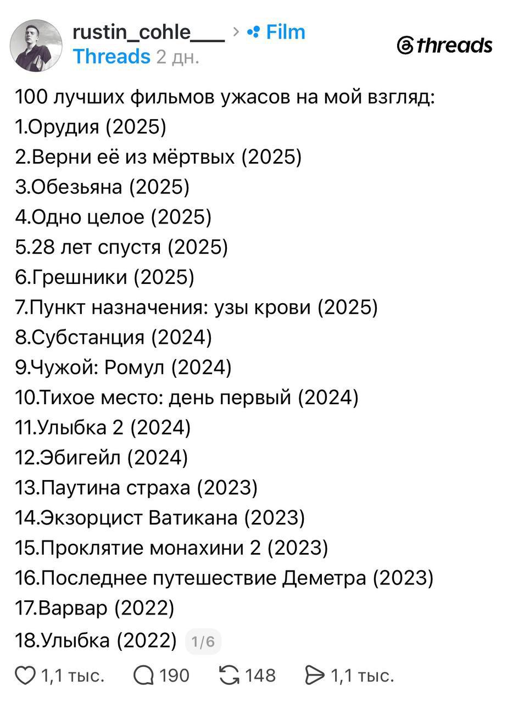
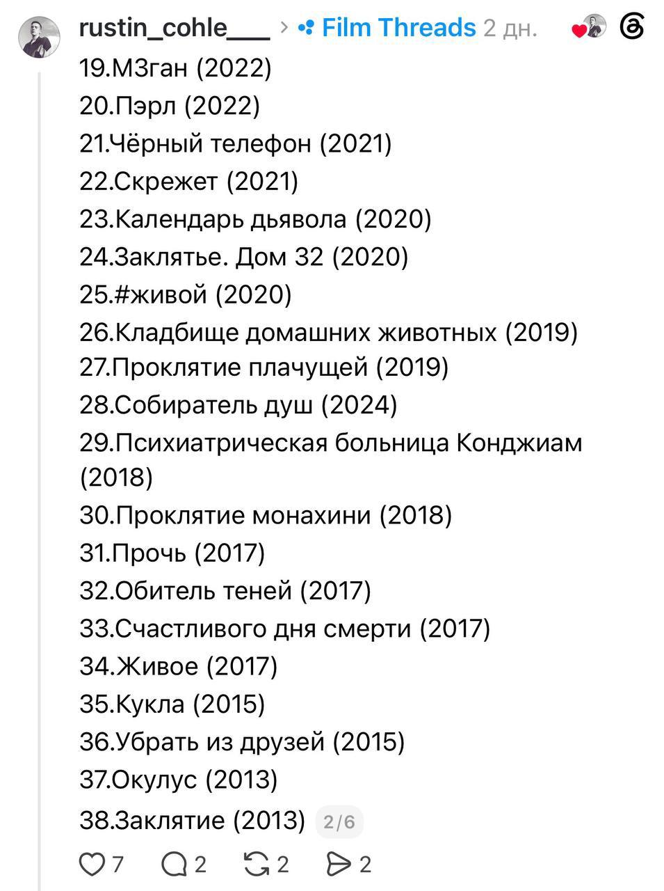
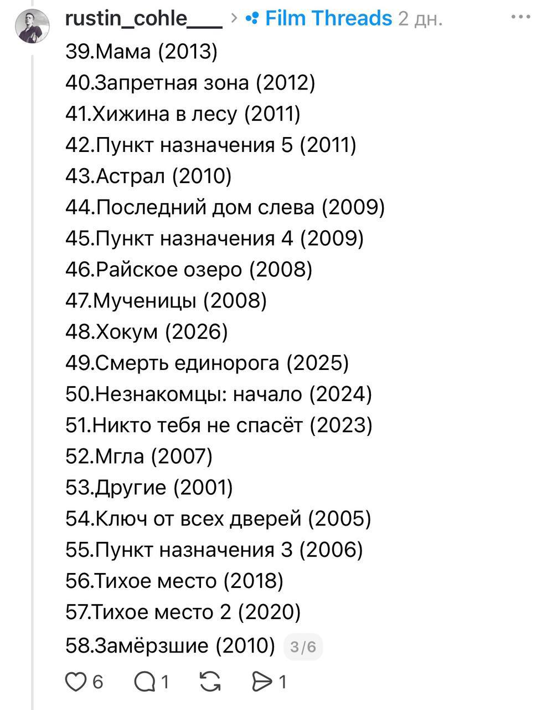
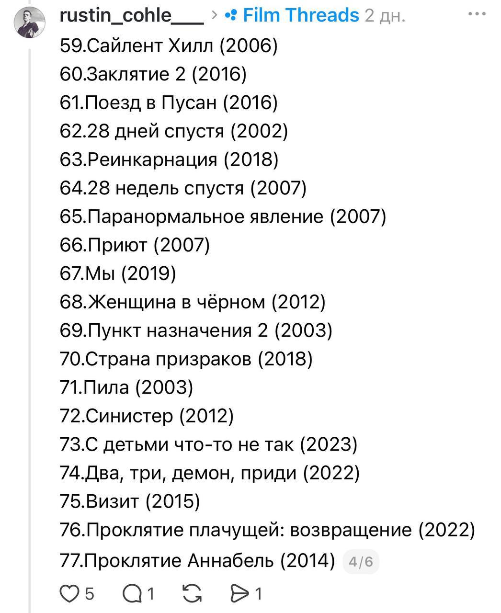
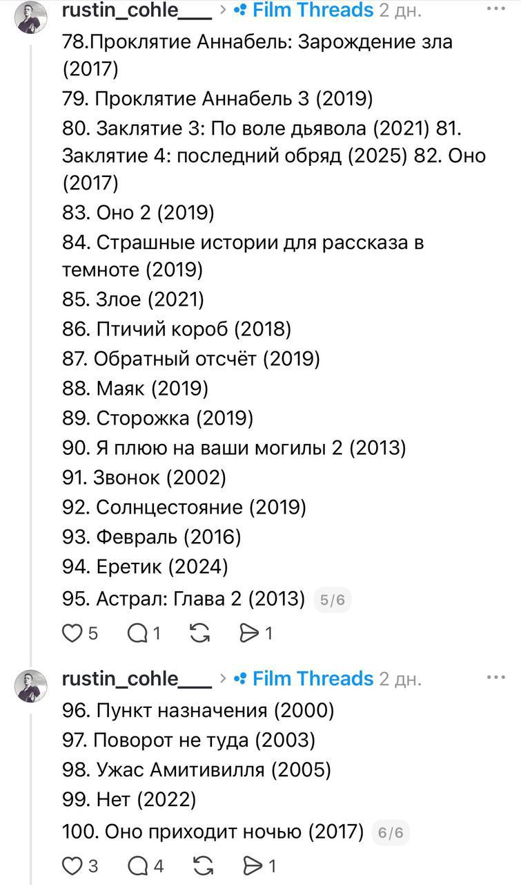

MDK
@mudak
MDK
@mudak
Подборка 100 фильмов ужасов на любой вкус которые стоит посмотреть хотя бы раз в жизни. В списке есть как культовые картины так и малоизвестные





Подборка 100 фильмов ужасов на любой вкус, которые стоит посмотреть хотя бы раз в жизни. В списке есть как культовые картины, так и малоизвестные
Забираем
Забираем